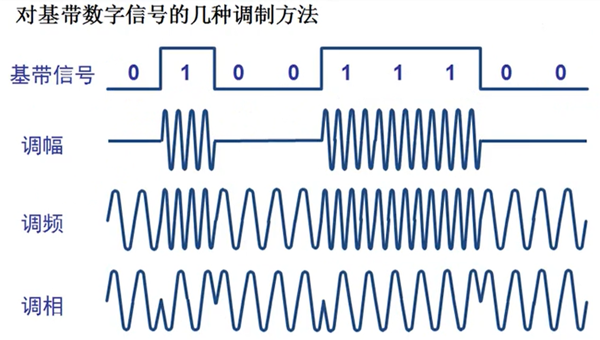
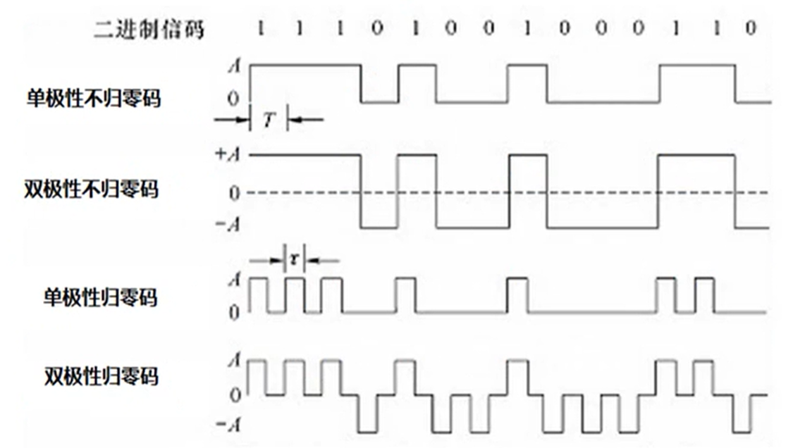
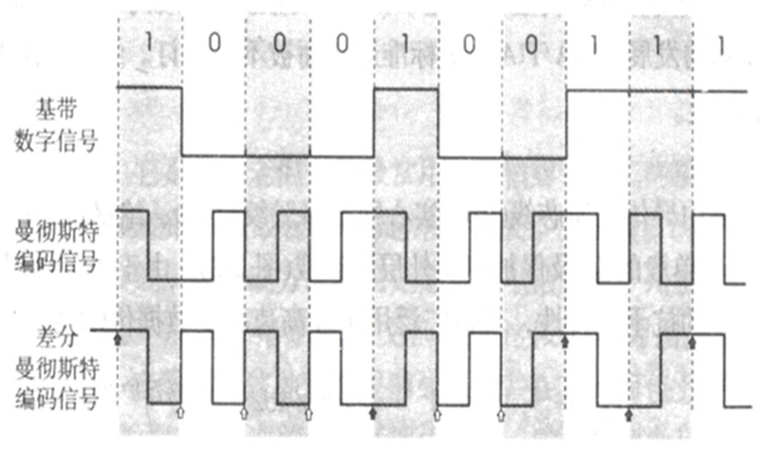
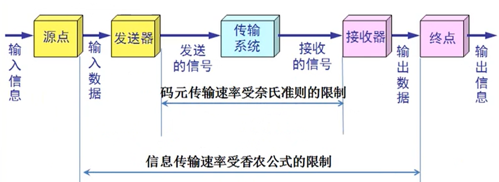

信道的基本概念 @
信道简介 @
信道一般表示向一个方向传送信息的媒体。所以通信线路往往包含一条发送信息的信号和一条接收信息的信道
- 单向通信(单工通信)，只能有一个方向的通信而没有反方向的交互
- 双向交替通信，通信的双方都可以发送信息，但不能同时发送和接受信息
- 双向同时通信，通信的双方可以同时发送和接受信息
基带信号和带通信号 @
- 基带信号(baseband，即基本频带信号)，来自信源的信号。像计算机输出的代表各种文字或图像文件的数据信号都属于基带信号。基带信号就是发出的直接表达了要传输的信息的信号，比如说话的声波就是基带信号。
- 带通信号(bandpass)，把基带信号经过载波调制后，把信号的频率范围搬移到较高的频段，以便在信道中传输(即仅在一段频率范围内能够通过信道)。
因此在传输距离较近时，计算机网络采用基带传输方式，因为近距离范围内基带信号的衰减不大，从而信号内容不会发生变化。因此在传输距离较近时，计算机网络采用基带传输方式。如从计算机到监视器，打印机等外设的信号就是基带传输的。
几种最基本的调制方法 @
- 调幅(AM): 载波的振幅随基带数字信号而变化。
- 调频(FM): 载波的频率随基带数字信号而变化。
- 调相(PM): 载波的初始相位随基带数字信号而变化。

常用编码 @
-
单极性不归零码
- 只使用一个电压值，用高电平表示 1，没电压表示 0.
-
双极性不归零码
- 用正电平和负电平分别表示二进制数据的 1 和 0，正负幅值相等。
-
单极性归零码
- 以高电平和零电平分别表示二进制码 1 和 0，而且在发送吗 1 时高电平在整个码元期间 T 只持续一段时间 γ，其余时间返回零电平
-
双极性归零码
- 正负零三个电平，信号本身携带同步信息。

-
曼彻斯特编码
- 位中间有信号时，低电位变高电位为 0，高电位变低电位为 1。
- 采用这种编码，一个时钟周期只可表示一个位，并且必须通过两次采样才能得到一个位的值，但它能携带时钟信号，且可表示没有数据传输。
-
差分曼彻斯特编码
- bit 中间有信号跳变，bit 与 bit 之间也有信号跳变，表示下一个 bit 为 0.bit 中间有信号跳变，bit 与 bit 之间无信号跳变，表示下一个 bit 为 1.
- 差分曼彻斯特编码与曼彻斯特编码相同，但抗干扰性强于曼彻斯特编码。

信道的极限容量 @
发送的信号波形通过实际的信道时会受到带宽、噪音、干扰等影响而失真，如果失真较小依旧可以识别并且纠正，如果失真较大则无法识别。
奈氏准则 @
1924 年，Nyquist 推导出著名的奈氏准则。他给出了在假定的理想条件下，为了避免码间串扰，码元的传输速率的上限值。
在任何信道中，码元传输的速率是有上限的，否则就会出现码间串扰的问题，使接收端对码元的识别成为不可能。
如果信道的频带越宽，也就是能通过的信号高频分量越多，那么就可以用更高的速率传送码元而不出现码间串扰。
香农公式 @
Shannon 用信息论的理论推导出了带宽受限且有高斯白噪声干扰的信道的极限、无差错的信息传输速率。
信道的极限信息传输速率 C 可以表示为
C = W log2(1+S/N) b/s log 以 2 为底
- W 为信道的带宽(单位 hz)
- S 为信道内所传信号的平均功率
- N 为信道内部的高斯噪声功率
- 香农公式表明，信道的带宽或信道中的信噪比越大，信息的极限传输速率就越高。
- 只要信息传输速率低于信道的极限信息传输速率，就一定可以找到某种办法来实现无差错的传输。
- 若信道带宽 W 或信噪比 S/N 没有上限，则信道的极限信息传输速率 C 也就没有上限。
- 实际信道上能够达到的信息传输速率要比香浓的极限传输速率低不少。
奈氏准则和香农公式的应用范围 @
- 奈氏准则表示没有信号干扰，码元的传输速率有上限。 香浓公式表示有信号干扰，无差错传输速率的理论极限。
